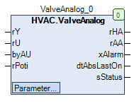

ValveAnalog (FB)¶
FUNCTION_BLOCK ValveAnalog
Short Description¶
Control of a continuous valve drive with blocking protection functionTypical application: Control valve in a heating circuit
Portrayal¶

Interfaces¶
Inputs¶
Name Datatype
Range
Init-Value
Function
rY REAL Control signal off Regulation
rU REAL 0.0 Position feedback from the control valve
byAU BOOL Feedback - Automatic operation
rPoti REAL Feedback - Control signal from hardware manual level
Outputs¶
Name Datatype
Range
Init-Value
Function
xHA REAL Control signal after manual override
rAA REAL Control signal before manual override
xAlarm BOOL collective fault message
dtAbsLastOn DATE_AND_TIME Date / time of the last blocking protection operation
sStatus STRING
1: ‘Fault position monitoring’.
2: ‘Control via automatic control’
2: ‘Controlled by manual hardware’
3: ‘Control via manual software’
Setpoints / Parameters¶
Name Datatype
Range
Init-Value
Function
udiControlTime UDINT 0 ... 600s 180s Monitoring of the valve position: signal delay
rControlDiff REAL 7.0% Monitoring of the valve position: Maximum position deviation
xControl BOOL TRUE Monitoring of the valve position: enable / disable
rAbsMaxLimit REAL 100.0 Upper limit value for the control signal before manual override
rAbsMinLimit REAL 0.0 Lower limit value for the control signal before manual override
udiAbsTime UDINT 10s ... 600s 180s Duration of blocking protection operation
tAbsStartTime TOD 00:00:00 - 23:59:59 Uhr 08:00:00 Uhr Time point of blocking protection operation
eAbsDay eDoW eDoW.Monday ... eDoW.Sunday eDoW.Monday Weekday of the blocking protection operation
rManValue REAL 0.0 Manual override: Hand value
eManModeN eMANNUM eMANNUM.Auto, eMANNUM.Man Manual override: Operating mode
Functional description¶
rAA control signal before manual override¶
rHA control signal after manual override¶
eManModeN Blocking protection process
rHA Notes
eMANNUM.Auto FALSE rY Automatic operation with passive blocking protection process
eMANNUM.Auto TRUE Output of the blocking protection process
Automatic operation with active blocking protection process
eMANNUM.Man X rManValue manual override
position monitoring¶
rU position feedback from the control valve¶
blocking protection module¶
Visualization¶
Information¶
Element Authors
Date
Version Note
Function
Alexander Halter 06.2016 1.0 Initial version
Programming
Alexander Halter 06.2016 1.0 Initial version
Test Jochen Reu 11.2017 1.0 Initial version
Documentation
Jochen Reu 11.2017 1.0 Initial version
Codesys¶
- InOut:
Scope Name Type Initial Comment Input rY REAL Stellsignal z.B. vom PI-Regler rU REAL 0 Feedback Valve position
eAO eManNum HVACTYPES.eManNum.Auto Manual - Switch position (A) Auto, (O)n
rPoti REAL Poti position of the hardware manual level
Output rHA REAL Control
rAA REAL Control Regulation
xAlarm BOOL Fault message via valve position
dtAbsLastOn DT Last Start ABS function
sStatus STRING Status Message
Input udiControlTime UDINT 180 Time in seconds from 10sec - 10min
rControlDiff REAL 7 Maximum permissible deviation between nominal and actual position in %.
xControl BOOL TRUE Enable Monitoring of the valve position
rAbsMaxLimit REAL 100 Upper limit value for the control signal
rAbsMinLimit REAL 0 Lower limit value for the control signal
udiAbsTime UDINT 180 ABS Time of the valve. Time in seconds from 0sec - 10min
todAbsStartTime TOD TIME_OF_DAY#8:0 Time at which blocking protection is executed
eAbsDay eDoW eDow.Monday Weekday on which the blocking protection is executed
rManValue REAL 0 HandWert eManModeN eMANNUM eMANNUM.Auto 0=Automatic operation 1=Manual operation